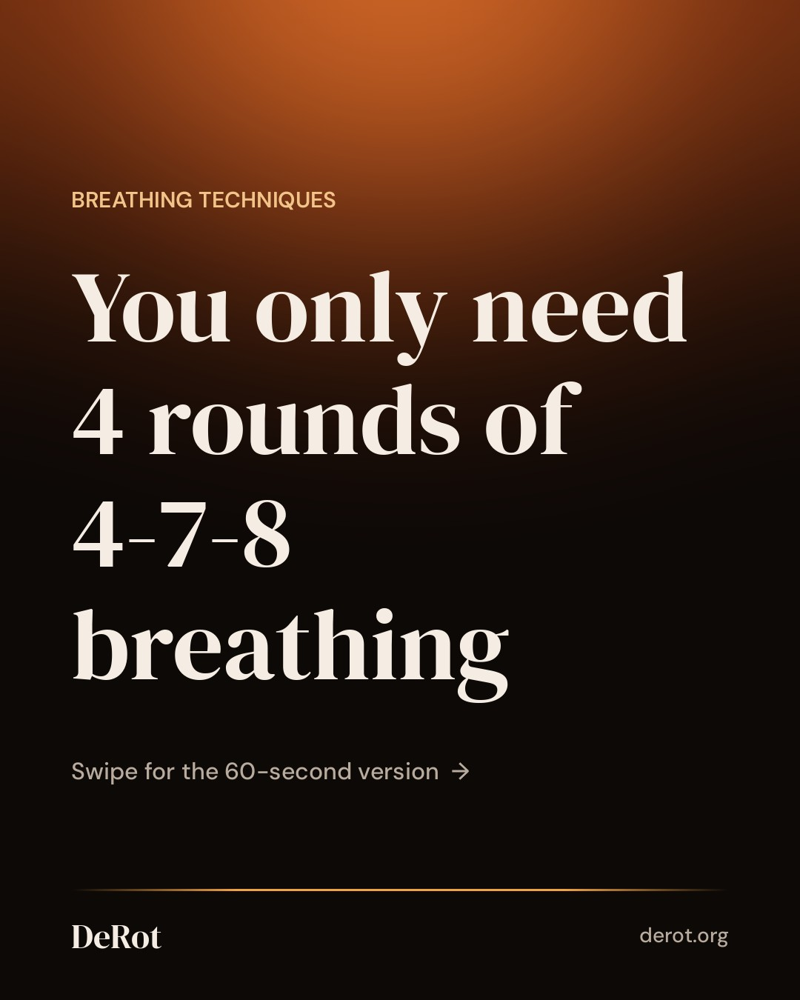
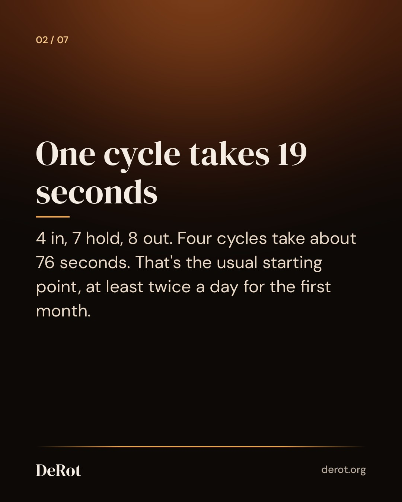
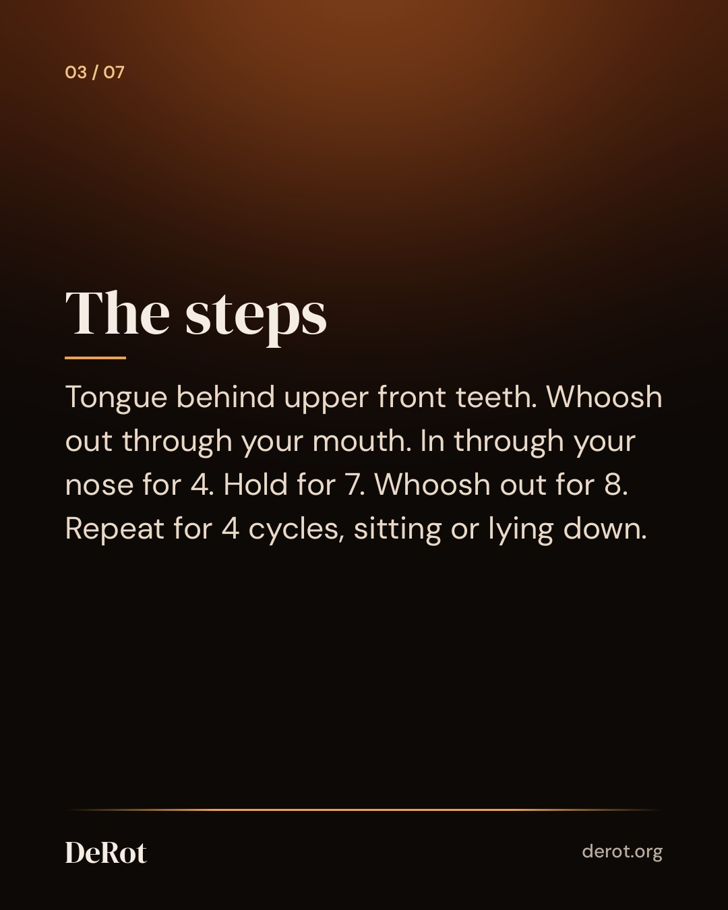
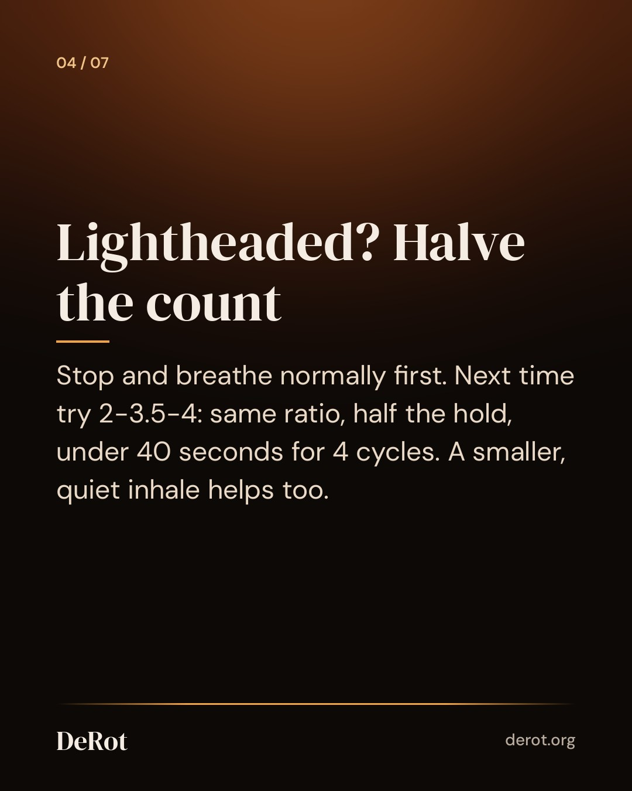
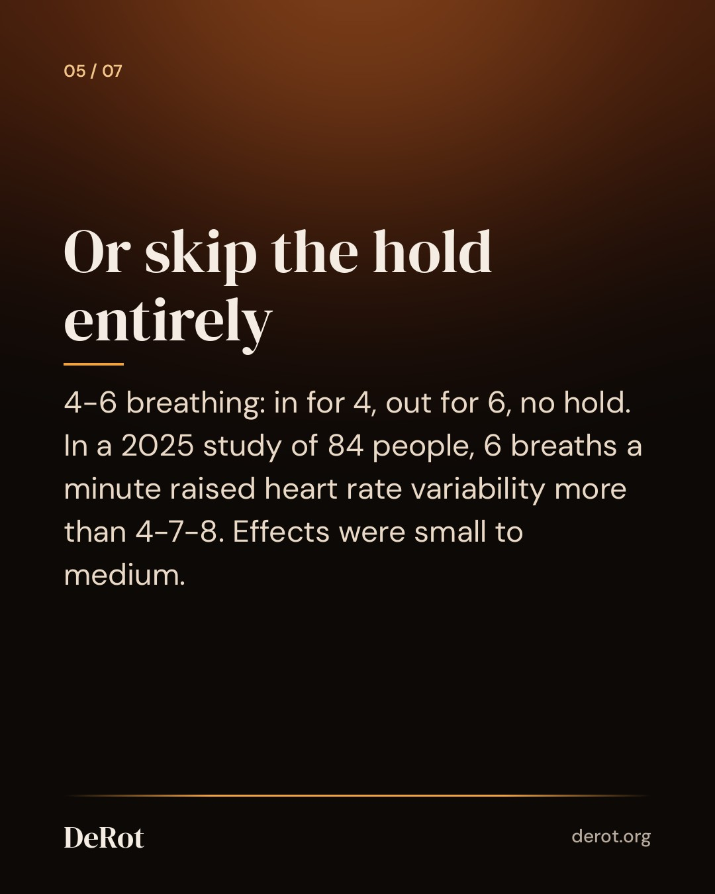
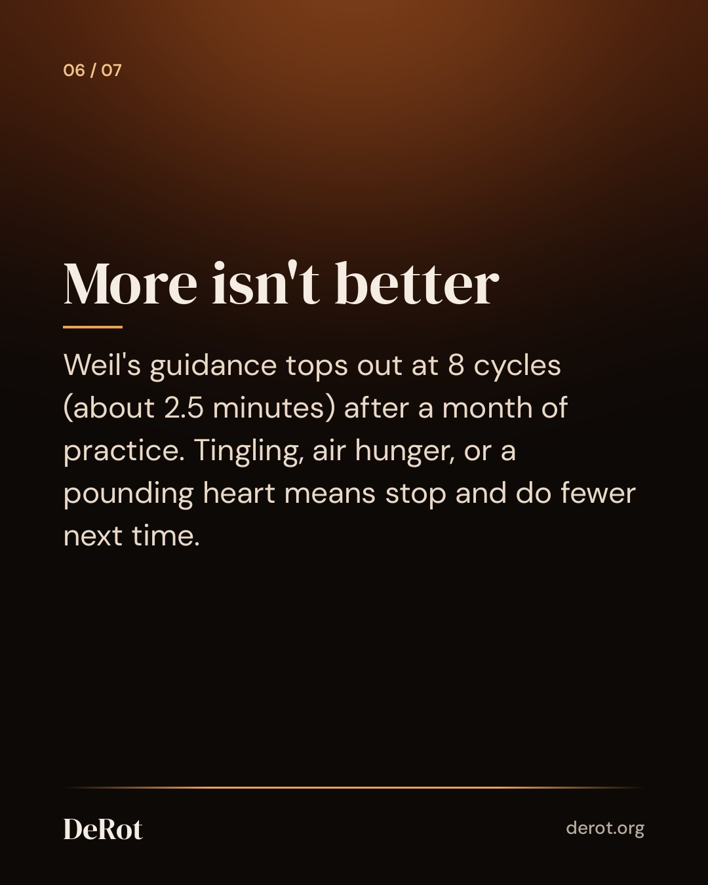
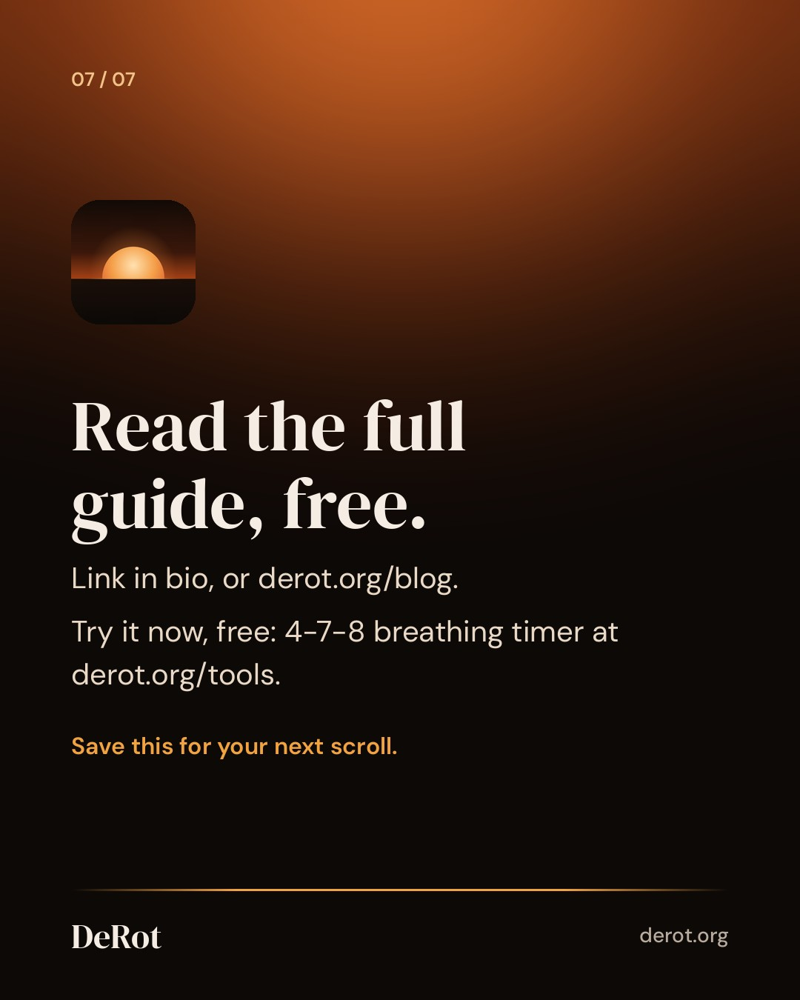

How Long to Do 4-7-8 Breathing: 4 Cycles, About 76 Seconds
Slides (Threads cover image; Instagram posts the reel)







Instagram Reel (33s)
Instagram caption
You only need about 76 seconds of 4-7-8 breathing. Here's the count. Sit or lie down. Breathe in through your nose for 4, hold for 7, whoosh out through your mouth for 8. That's 19 seconds. Do 4 cycles, then breathe normally. If the hold makes you lightheaded, stop. Next time try 2-3.5-4: same ratio, half the time. Full guide: link in bio. #breathwork #478breathing #nervoussystemregulation #breathingexercise #calmbreathing
Threads
A useful bit of math on 4-7-8 breathing: one cycle is 19 seconds, so the usual starting dose of 4 cycles takes about 76 seconds. That's it. If the 7-second hold makes you lightheaded, keep the ratio and halve it: in 2, hold 3.5, out 4. Four cycles finish in under 40 seconds. https://derot.org/blog/how-long-to-do-4-7-8-breathing/
4-7-8 breathing is easier to dose than most people think. One cycle (in for 4, hold for 7, out for 8) takes 19 seconds, so the usual starting point of 4 cycles takes about 76 seconds. Twice a day is the common guidance. If the 7-second hold leaves you lightheaded, stop and breathe normally. Next time use the faster 2-3.5-4 count, which keeps the same ratio, or try 4-6 breathing with no hold at all. It's a handy reset when the feed has left you wired. DeRot, our upcoming iOS app, pauses your apps while you reset with a few calming breaths. Read the full guide for the timing math and what the research does and doesn't show.
Schedule (UTC)
| queued | 2026-11-20T22:16:00+00:00 | ||
| threads | queued | 2026-11-20T22:16:00+00:00 | |
| queued | 2026-11-20T23:30:00+00:00 |